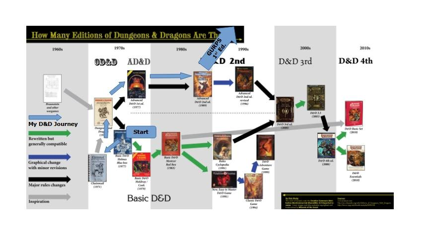

FRH New Player Packet
Meet the GM
Sean Grinslade
FRH comes out of a long life in the hobby: old campaign-world habits, deep-setting play, emergent table culture, and a belief that roleplaying can be serious, funny, dangerous, humane, and genuinely memorable all at once.
Short Bio
Sean has been in the tabletop role-playing hobby since the early wild-west days of Original D&D, and the shape of that first generation of play still informs his style: deep campaign worlds, emergent play, player agency, and tables where humor, danger, mystery, and genuine feeling can all live together. FRH reflects that lineage, drawing on old campaign habits, ensemble play, and a long affection for strange settings that reward curiosity.
Outside the hobby, Sean is a retired programmer and database professional whose career included work for firms such as Bank of America and Microsoft. Sean lives happily in Seattle with his wife, dog, and cat.
Sean's History with D&D

Some of Sean's Most Interesting TTRPGs He's Played
Original D&D and the early D&D campaign tradition; Blackmoor and the Braunstein-descended style of role assumption and emergent play; Empire of the Petal Throne / Tekumel; GURPS; Call of Cthulhu; Traveller; In Nomine; World of Darkness; Amber Diceless; Paranoia; Feng Shui.
What New Players Should Take from This
FRH is meant to feel like a real campaign world rather than a disposable spooky premise: dangerous, funny, mysterious, humane, and large enough for players to leave a mark on it. The goal is not to impress players with lore quantity, but to invite them into a table where the world has texture and their choices matter.